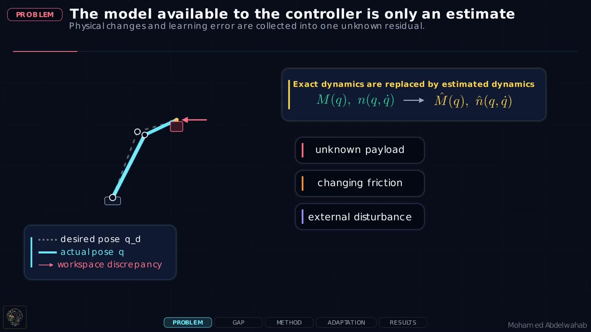
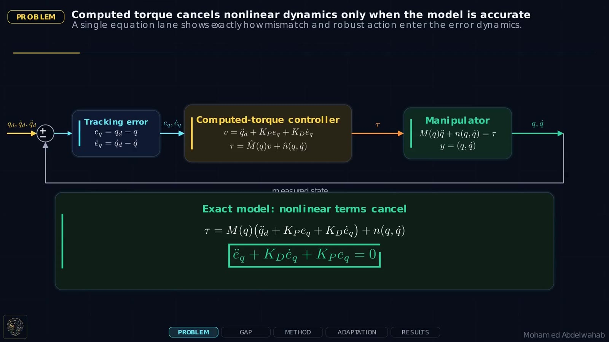
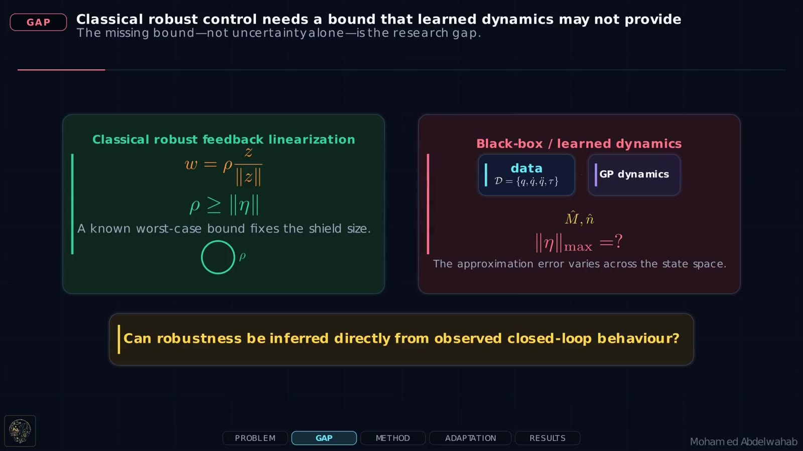
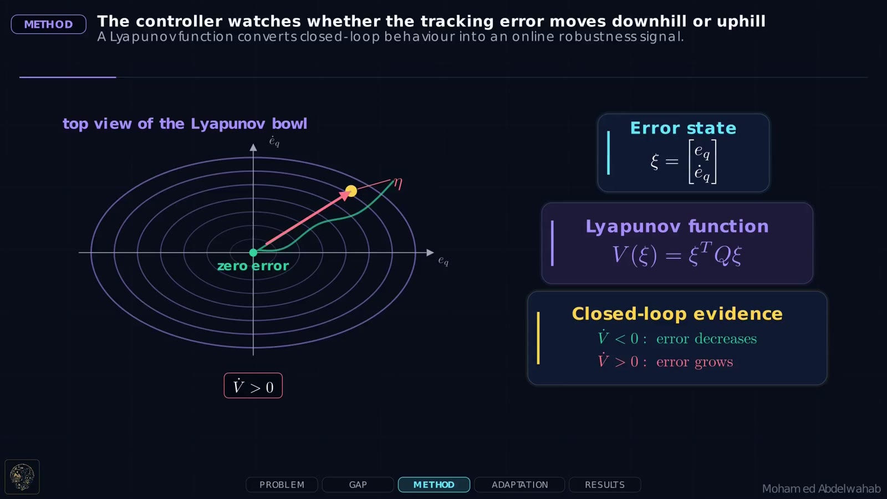
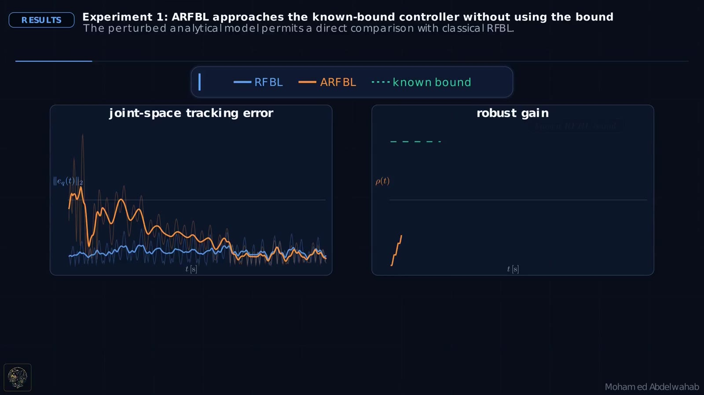
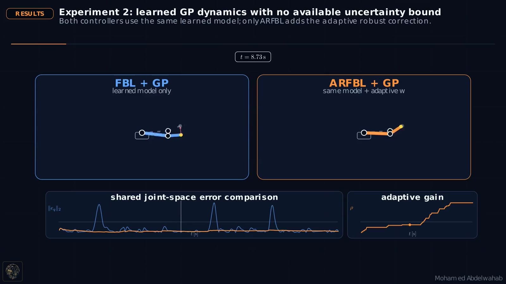
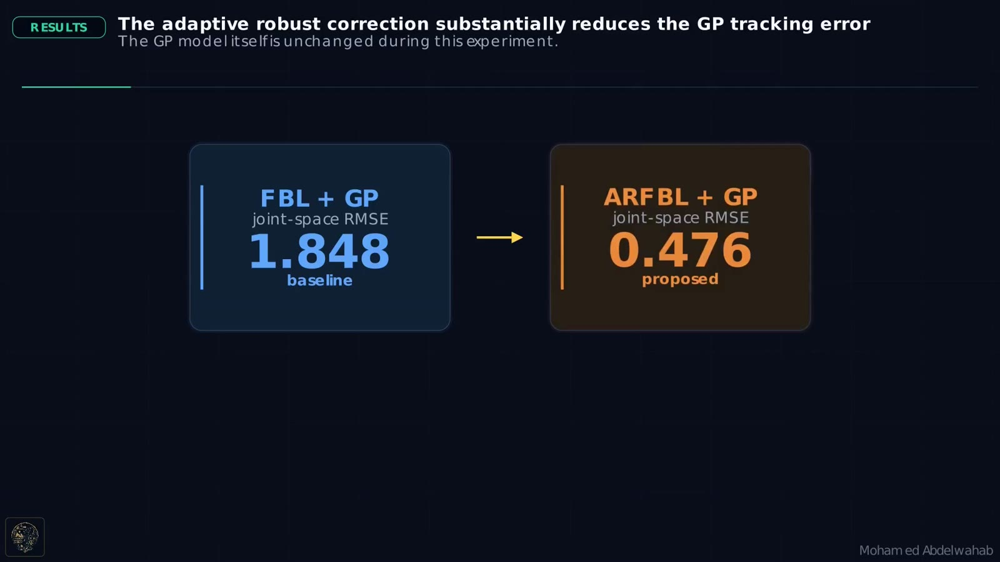

Why model uncertainty breaks classical feedback linearization
For a robotic manipulator, inverse-dynamics control attempts to cancel the nonlinear inertia, Coriolis, centrifugal, and gravity terms. With an exact model, the closed-loop tracking dynamics become linear and decoupled. In practice, payload variation, friction, unmodeled dynamics, and external disturbances make the available model only an approximation.

Classical robust control needs a bound that may not exist
Introducing a robust action $w$ can recover convergence when its gain satisfies $\rho\geq\lVert\eta\rVert$, where $\eta$ is the unknown mismatch entering the error dynamics. This requirement is difficult to satisfy for black-box or learned robot models because the worst-case approximation error is usually unavailable across the state space.


Use the Lyapunov derivative as closed-loop evidence
Define the error state $\xi=[e^\top\;\dot e^\top]^\top$, a quadratic Lyapunov function $V(\xi)=\xi^\top Q\xi$, and the robust direction $z=D^\top Q\xi$. The sign of $\dot V$ reveals whether the current gain is sufficient: negative values indicate contraction, while nonnegative or nearly nonnegative values indicate that the uncertainty is not being adequately compensated.


What the analysis guarantees
No numerical uncertainty bound is required
The proof assumes that finite bounds exist, but their values are not used by the controller.
The adaptive gain remains bounded
Once $\rho$ is sufficiently large, $\dot V$ becomes negative and the update stops.
Tracking enters a boundary region
With the modified update law, the error state converges to $S_\epsilon=\{\xi:\lVert D^\top Q\xi\rVert<\epsilon\}$.
The boundary layer avoids discontinuous high-frequency switching near $z=0$. Its thickness is governed by $\epsilon$, which creates the expected trade-off between tracking precision and chattering attenuation.
Two tests isolate the contribution of adaptation
Comparable tracking without using the known bound
Because the perturbed model admits an analytical uncertainty bound, the adaptive method can be compared directly with conventional robust feedback linearization. ARFBL approaches the known-bound controller while computing $\rho$ from the Lyapunov condition rather than from prior uncertainty information.

Robustness when the learned-model bound is unavailable
Both controllers use the same GP dynamics estimate. Standard feedback linearization exhibits large error peaks when the learned model does not cancel the nonlinear dynamics. Adding the adaptive robust term substantially reduces the joint-space tracking error and produces smoother, lower-magnitude torque trajectories.


Robustness is adapted from observed behavior
The method converts a difficult modeling requirement—knowing a global uncertainty bound—into a closed-loop adaptation problem. The controller increases its robust authority only when the Lyapunov evidence shows that the current compensation is insufficient, making it particularly suitable for robot models learned from data.